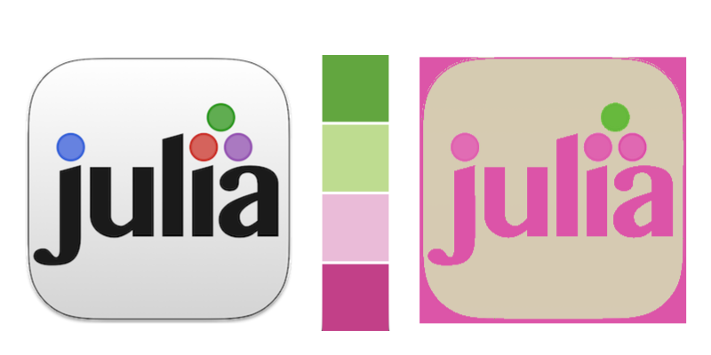

Converting images
Convert image from one scheme to another
It's possible to convert an image using one color scheme to use another.
convert_to_scheme(cscheme, img) returns a new image in which each pixel from the provided image is mapped to its closest matching color in the provided scheme. See ColorSchemes's getinverse() function for more details on how this works.
In the following figure, the Julia logo is converted to use a ColorScheme with no black or white:
using FileIO, ColorSchemes, ColorSchemeTools, Images
img = load("julia-logo-square.png")
img_rgb = RGB.(img) # get rid of alpha channel
convertedimage = convert_to_scheme(ColorSchemes.PiYG_4, img_rgb)
save("original.png", img)
save("converted.png", convertedimage)
Notice how the white was matched by the color right at the boundary of the light purple and pale green.
ColorSchemeTools.convert_to_scheme — Function.convert_to_scheme(cscheme, img)Converts img from its current color values to use only the colors defined in the ColorScheme cscheme.
image = nonTransparentImg
convert_to_scheme(ColorSchemes.leonardo, image)
convert_to_scheme(ColorSchemes.Paired_12, image)